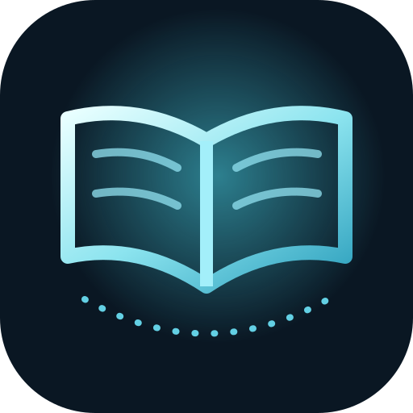

Comprender mejor el español cotidiano.
Cuatro semanas de falsos amigos, vocabulario contextual y un examen de 40 casos. Para quienes ya hablan portugués y desean evitar malentendidos frecuentes.
Consultar programaEstudiar desde el campus ↗
LINGUA ABERTABelentani EducationUna ruta comprensible
Tres recorridos con materiales existentes, once unidades y una evaluación propia por curso. Aquí no se inventa progreso: podrás estudiar y demostrar lo aprendido en el campus.
Cuatro semanas de falsos amigos, vocabulario contextual y un examen de 40 casos. Para quienes ya hablan portugués y desean evitar malentendidos frecuentes.
Consultar programaEstudiar desde el campus ↗Cuatro semanas sobre saludos, entorno educativo, ciudad y expresiones iniciales, con explicación y revisión por preguntas.
Consultar programaEstudiar desde el campus ↗Tres semanas dedicadas a comprensión, argumentación y expresión escrita para el estudio en español.
Consultar programaEstudiar desde el campus ↗El material puede quedar disponible sin conexión tras cargarlo correctamente en HTTPS o localhost y completar la instalación offline. No se requiere crear una cuenta ni se emite una certificación oficial.